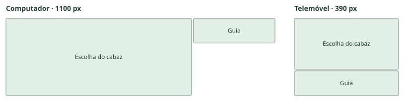

Medidas desta ficha
- Medidas a usar
- Bases dos painéis: 400 px e 176 px; entre eles: 16 px. Cada opção: altura mínima 56 px, espaço interior 8 px, intervalo interno 12 px. Entre opções: 8 px.
- Quando muda a disposição
- Sem @media. Se as duas bases e o intervalo não couberem, o painel da nota passa para baixo.
- Resultado esperado
- 390 px: nota por baixo das opções. 768 e 1100 px: nota à direita. O texto pode quebrar; o preço fica inteiro.
Larguras para testar: 390 px, 768 px e 1100 px. São larguras da janela do navegador. Só escreves uma media query se o exercício a pedir.
No CSS: escreve 16px, sem espaço entre o número e a
unidade.
Primeiro passo: Abre style.css no editor e lê a etapa 1.
Quando fizeres uma alteração, guarda o ficheiro e atualiza esta página para veres o que
mudou.
Ver o resultado esperado no computador e no telemóvel
Este esquema mostra as posições, sem escala. Para a largura intermédia, usa os testes no fim.

Área de trabalho · Seleção de cabazes
Escolhe um cabaz
Etapas e conceitos desta ficha
Já conheces: Classes, bordas e espaçamento; leitura da relação entre pai e filhos.
Com apoio nesta ficha: As opções de escolha e as respetivas etiquetas já estão no HTML. Organiza-as com Flexbox; não precisas de programar o clique ou o teclado.
- Coloca a escolha ao lado da nota
- Agrupa as três opções
- Alinha círculo, texto e preço
- Torna a linha fácil de selecionar
- Testa uma descrição mais comprida
Encontras as instruções de cada etapa em style.css.
Quando é que está pronto?
Usa o modo responsivo do navegador. Experimenta 390 px (telemóvel), 768 px (intermédio) e 1100 px (computador).
Assinala os testes que passaram. As marcas desaparecem quando atualizas a página; guarda o
resultado em registo.md.
Desafio opcional
Só como experiência, realça a opção enquanto o seu círculo tem o foco do teclado. Ao sair do grupo, o realce extra deve desaparecer.